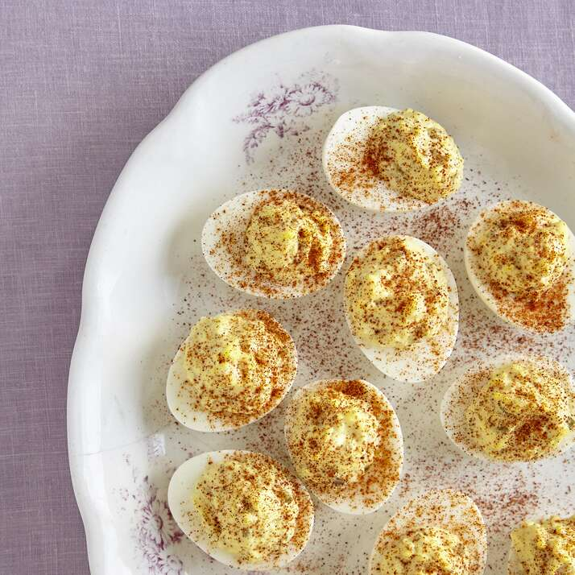

Cream Cheese Deviled Eggs

Description
Cream cheese adds a whole new dimension to these deviled eggs. Top with a few strips of lox-style smoked salmon and chopped fresh chives.
Ingredients
- 6 hard-boiled eggs
- 2 ounces cream cheese, softened
- 1 teaspoon prepared yellow mustard
- 1 teaspoon apple cider vinegar
- salt and ground black pepper to taste
Steps
- Halve eggs lengthwise; transfer yolks to a small bowl and mash with a fork
- Stir in cream cheese, mustard, and vinegar, then season with salt and pepper
- Fill egg white halves with yolk mixture.
Nutrition Facts
Per Serving: 56 calories; protein 3.5g; carbohydrates 0.4g; fat 4.3g; cholesterol 111.2mg; sodium 62.8mg.